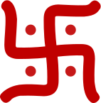
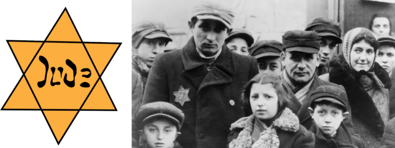

Cronologia
Dall'origine del NSDAP alla Kristallnacht, 1889–1938
Ideologia
Le componenti del nazionalsocialismo

Il simbolo della svastica è oggi indissolubilmente associato al nazismo ed è utilizzato tuttora da associazioni illegali di stampo neonazista o neofascista. In moltissimi Stati la sua esibizione è considerata un reato, ricadendo nelle fattispecie di apologia del nazifascismo o di incitamento all'odio. Tuttavia, dal punto di vista storico, la svastica non ha alcun significato antisemita originariamente: è un simbolo antichissimo e augurale, diffuso in praticamente tutta l'Asia, dall'India al Giappone. Hitler conosceva questo simbolo, avendolo incontrato durante i suoi anni di studio delle culture orientali, e lo adottò per il partito nella configurazione di una svastica nera in un cerchio bianco su fondo rosso.
«Nel rosso riconosciamo l'idea sociale del movimento, nel bianco l'idea nazionalista, nella croce uncinata l'impegno a combattere per l'affermazione dell'uomo ariano e per il diffondersi della tendenza al lavoro creativo, che fu e sarà sempre antisemitico.»
— Adolf Hitler, Mein Kampf
Personaggi
Protagonisti del nazismo e della resistenza
Documenti
Fonti primarie con commento storico
Antisemitismo
Dalla discriminazione alla violenza di massa, 1933–1938

A sinistra, la stella di David di stoffa che gli ebrei erano obbligati a cucire sugli abiti per identificarsi. A destra, ebrei nel ghetto di Łódź in Polonia che indossano la stella. Fonte: JTA / Jewish Chronicle / Heritage Images / Getty Images
Propaganda
La macchina del consenso nazista
Economia
Dal crollo del '29 all'economia di guerra